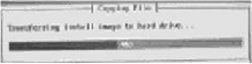
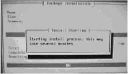
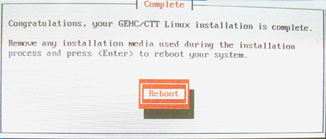

Operating Documentation
Direction 5133330-3, Rev# 14
Signa EXCITE HD 3.0T Service Methods
Module Version 2.0, Version Date 6/10/08
Operating Documentation |
| Required Persons | Preliminary Reqs | Procedure | Finalization |
|---|---|---|---|
| 1 | Not Applicable | 20 mins | Not Applicable |
The procedure that follows explains how to load the Linux Operating System onto a PC.
| Item | Qty | Effectivity | Part# | Manufacturer | |
|---|---|---|---|---|---|
| PC Linux Operating System CD-ROM. | 1 | - | - | - | |
| ||||
| The software load will fail if all required conditions are not completed. | ||||
| Condition | Reference | Effectivity |
|---|---|---|
All system backups are done and backups are verified by performing a Verification Of SaveInfo Data. Only use a 2.3 gb MOD for SaveInfo. | - | - |
If being used, power the DASM Off. | - | - |
Turn on the Waveform Monitor. | - | - |
Turn on the SCSI Tower. | - | - |
Locate and insert the Linux Operating System disk (current revision) into the DVD drive on the PC.
Reboot the host computer.
| ||||
| The proper OS load command MUST be entered for foreign keyboards and for the mouse to be detected. | ||||
At the boot prompt, type one of the following commands based on your keyboard type:
|
The OS load will take about 15 minutes to complete. After about 90 seconds, the message (shown in Illustration 1) displays indicating the OS software load files are being copied.
Illustration 1: Copying Files

After a few minutes, a message (shown in Illustration 2) displays indicating the OS software load has begun.
Illustration 2: Starting Installation

After a few minutes, a terminal window displays with the message similar to the one shown in Illustration 3 indicating the Linux OS software load is now complete.
Illustration 3: OS Software Load Completed

The OS disk automatically ejects once the installation is complete. Remove the disk from the drive tray.
The Linux OS software load is now complete, proceed to MR Apps Load.
No finalization steps.